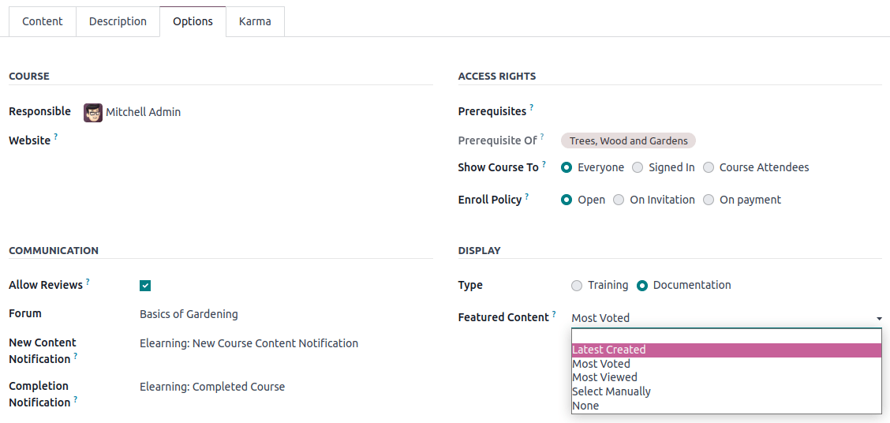
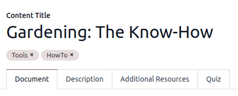
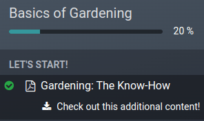

eLearning¶
The eLearning app allows you to easily upload content, define learning objectives, manage attendees, assess students’ progress, and even set up rewards. Engaging participants in a meaningful learning experience enhances their attentiveness and fosters heightened productivity.
Important
You can manage your eLearning content on the front end or the back end. The front end allows you to create content quickly from your website, while the back end provides additional options and allows collaboration. This documentation focuses on using the back end to create your content.
See also
Courses¶
By going to , you can get an overview of all your courses.
Click on a course title to edit your course on the back end. Click on View course to access your course on the front end.
Course creation¶
Click New to create a new course. When the page pops up, you can add your Course Title and one or more Tags to describe your course. You can add an image to illustrate your course by hovering your mouse on the camera placeholder image and clicking on the edit icon. Four tabs allow you to edit your course further: Content, Description, Options, and Karma.

Content tab¶
This tab allows you to manage your course content. Click on Add Section to divide your course into different sections. Click on Add Content to create content. Click on Add Certification to assess the level of understanding of your attendees, certify their skills, and motivate them. Certification is part of the Surveys app.
Description tab¶
You can add a short description or information related to your course in the Description tab. It appears under your course title on your website.

Options tab¶
In the Options tab, different configurations are available: Course, Communication, Access rights, and Display.
Course¶
Assign a Responsible user for your course. If you have multiple websites, use the Website field to only display the course on the selected website.
Communication¶
Allow Reviews: tick the box to allow attendees to like and comment on your content and to submit reviews on your course;
Forum: add a dedicated forum to your course (only shown if the Forum feature is enabled in the app’s settings);
New Content Notification: select an email template sent to your attendees when you upload new content. Click on the internal link button (➜) to have access to the email template editor;
Completion Notification: select an email template sent to your attendees once they reach the end of your course. Click on the internal link button (➜) to access the email template editor;
Access rights¶
Show course to: define who can access your course and their content between Everyone, Signed In or Course Attendees;
Enroll Policy: define how people enroll in your course. Select:
Open: if you want your course to be available to anyone;
On Invitation: if only people who received an invitation can enroll to your course. If selected, fill in the Enroll Message explaining the course’s enrollment process. This message appears on your website under the course title;
On Payment: if only people who bought your course can attend it. The Paid Courses feature must be enabled to get this option. If you select On Payment, you must add a Product for your course.
Note
Only products set up with Course as their Product Type are displayed.
Display¶
Training: the course content appears as a training program, and the courses must be taken in the proposed order.
Documentation: the content is available in any order. If you choose this option, you can choose which page should be promoted on the course homepage by using the Featured Content field.
Karma tab¶
This tab is about gamification to make eLearning fun and interactive.
In the Rewards section, choose how many karma points you want to grant your students when they Review or Finish a course.
In the Access Rights section, define the karma needed to Add Review, Add Comment, or Vote on the course.
Note
From your course, click the Contact Attendees button to reach people who are enrolled in the course.
Course groups¶
Use the Course Groups to inform users and allow them to filter the courses from the All Courses dashboard.
You can manage them by going to . Click New to create a new course group. Add the Course Group Name, tick the Menu Entry box to allow users to search by course group on the website, and add tags in the Tag Name column. For each tag, you can select a corresponding color.
Settings¶
You can enable different features to customize your courses by going to :
Certifications: to evaluate the knowledge of your attendees and certify their skills;
Paid courses: to sell access to your courses on your website and track revenues;
Mailing: to update all your attendees at once through mass mailings;
Forum: to create a community and let attendees answer each other’s questions.
Content¶
Manage your content by going to . Click New to create content. Add your Content Title, and if you want Tags, then fill in the related information among the different tabs.
Document tab¶
Course: select the course your content belongs to;
Content Type: select the type of your content;
Responsible: add a responsible person for your content;
Duration: indicate the time required to complete the course;
Allow Download: allow users to download the content of the slide. This option is only visible when the content is a document;
Allow Preview: the course is accessible by anyone.
# of Public Views: displays the number of views from non-enrolled participants;
# Total Views: displays the total number of views (non-enrolled and enrolled participants).
Description tab¶
You can add a description of your content that appears front end in the About section of your course content.
Additional Resources tab¶
Click Add a line to add a link or a file that supports your participants’ learning. It appears in the course content on your website.
Quiz tab¶
From this tab you can create a quiz to assess your students at the end of the course.
The Points Rewards section lets you give a specific number of karma points depending on how many tries they need to correctly answer the question. Then, create your questions and the possible answers by clicking on Add a line. A new window pops up, add the question by filling in the Question Name and add multiple answers by clicking on Add a line. Tick one of the Is correct answer checkboxes to mark one answer as correct. You can also fill in the Comment field to display additional information when the answer is chosen by the participant.
Publish your content¶
Everything created on the back end needs to be published from the front end. Unpublished content is always visible from your website but still needs to be published to be available to your audience.
You must be on your website’s front end to publish your content. To do so, click on the Go To Website smart button, and tick the Publish option available in the right-hand corner.